Que ce soit pour les synoptiques de description des processus industriels ou pour les tableaux ou écrans graphiques de supervision et de contrôle, l’utilisation de symboles est essentielle tant au niveau des études qu’en exploitation et maintenance : symbolisation des points de mesure, symbolisation des indicateurs, enregistreurs, régulateurs, symbolisation des capteurs, des actionneurs, des organes de réglage…
Le rôle de chaque symbole est de représenter sur un schéma une entité plus ou moins complexe, de manière à ce qu’elle soit reconnaissable et identifiable par le plus grand nombre de techniciens et ingénieurs.
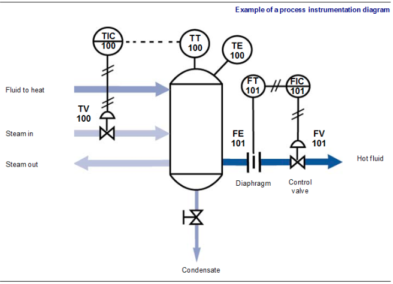
Fig. 1
L’installation, la mise en service, l’exploitation et la maintenance des installations industrielles nécessitent une représentation symbolique normalisée des divers procédés élémentaires d’une installation complexe. Les symboles employés sont utilisés tant au niveau des documents manipulés par le technicien d’installation ou de maintenance qu’au niveau des tableaux de contrôle ou synoptiques manipulés par les agents d’exploitation.
Il existe une normalisation générale mais on ne s’étonnera pas de l’existence de variantes en fonction du secteur d’activité (chimie, pétrochimie, distribution d’électricité…) ou même de l’entreprise.
Il y a plusieurs types de documents relatifs aux instruments de contrôle disponibles dans un site. Ces différents documents sont plus ou moins proches de l’instrument de régulation. En effet, les documents disponibles peuvent aller du schéma de principe de l’installation jusqu’à la notice technique d’un capteur, par exemple. On distingue principalement :
Il y a aussi les :
Pour tous les corps de métier, on utilise le plan de circulation des fluides (PCF), qui est un schéma faisant apparaître les éléments matériels et les flux de fluides, nécessaires au fonctionnement du procédé. Ce schéma comprend notamment :
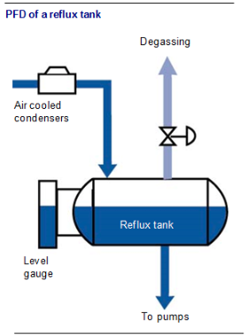
Fig. 2
Le PCF d’une installation est un outil utile, mais il est insuffisant car il n’indique pas les moyens de contrôle-commande du procédé. On le complète donc par l’indication de tous les dispositifs permettant l’observation et la commande du procédé, que l’on désigne habituellement par le terme d’instruments.
Ce schéma représente les tuyauteries et les instruments, d’où le sigle TI. C’est un schéma PCF, instrumenté, c’est-à-dire complété par les appareils de mesure, les appareils de contrôle et de calcul, les actionneurs et les liaisons entre ces divers appareils.
Tous ces éléments ont une représentation normalisée. L’étude de cette représentation donne lieu à un chapitre à part entière (chapitre 2).
On peut résumer de façon succincte cette représentation de la manière suivante :
La représentation des actionneurs est un dessin représentant symboliquement leur forme.
itemize
Il s’agit de schémas plus détaillés que les schémas TI. Ces schémas permettent de visualiser les liaisons entre les différents appareils d’une boucle de régulation, mais aussi les numéros de bornes de ces différents appareils, les repères et câbles, ou encore les numéros de bornes des boîtes de jonctions.
Les notices des différents appareils constituant les boucles de régulation sont des documents fournis par les différents constructeurs de ces instruments sur lesquels on retrouve les caractéristiques techniques des appareils (échelle de mesure d’un transmetteur, signal de sortie, valeurs d’alimentation, précision garantie par le constructeur, etc.).
On retrouve aussi dans ces notices les précautions à prendre pour le montage des instruments, une description du fonctionnement de l’appareil, quelquefois des schémas avec une nomenclature complète des différentes pièces, ou encore des documents de certification.
Nous n’allons pas étudier la norme Afnor dans le détail, mais nous contenter de voir les points les plus importants vous permettant de lire les schémas d’instrumentation des boucles de régulation d’un site d’incinération.
D’une manière générale, cette norme reprend pour l’essentiel les symboles définis d’une part par l’ISA (Instrument Society of America), d’autre part, par l’ISO (International Standard Organisation).
Dans la première partie nous allons voir les symboles des fonctions de bases, dans la deuxième partie, la représentation des signaux, dans la troisième les symboles des capteurs (différents types de capteurs de débit, de niveaux…). Puis viendront les symboles des dispositifs régulants, des robinets et des actionneurs, et la méthode d’identification des instruments. Enfin, dans la dernière partie nous étudierons quelques exemples.
Les instruments de régulation, qu’ils s’agissent de transmetteurs, de régulateurs, de convertisseurs…, sont tous représentés par des cercles.
Si l’appareil de régulation est un instrument local, celui-ci est représenté par un cercle simple. On entend par instrument local, un élément de la boucle de régulation situé à proximité du procédé. Par exemple, un transmetteur mesurant le niveau dans une cuve est obligatoirement situé à proximité de celle-ci : il s’agit, par définition, d’un instrument local.
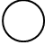
Fig. 3
{Instrument individuel local}Les instruments situés sur un tableau en salle de commande sont représentés par un cercle barré. Il s’agit principalement de régulateurs, d’indicateurs, d’enregistreurs ou de voyants d’alarme.
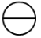
Fig. 4
{Instrument de tableau en salle}Il existe aussi des instruments de tableau local. Ce sont des instruments de tableau qui ne sont pas situés en salle de commande mais dans des petites salles, généralement peu éloignées du procédé. Ces instruments sont repérés par un cercle contenant deux barres.
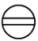
Fig. 5
{Instrument de tableau local}Il est possible de compléter le cercle d’un instrument pour y ajouter une précision. Par exemple, on peut préciser le mode régulation d’un régulateur en indiquant les termes PID dans ce rectangle.
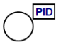
Fig. 6
Pour les convertisseurs, le cercle est complété d’un carré dans lequel on précise la nature de la conversion.
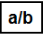
Fig. 7
{Convertisseur de signal}a et b peuvent être :
Par exemple, un Le convertisseur électropneumatique sera représenté ainsi :
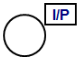
Fig. 8
Il existe deux représentations possibles pour les points de mesures. La première consiste simplement en un trait fin reliant le transmetteur au procédé. La seconde, le plus souvent utilisé pour symboliser les sondes de température, est un trait fin complété d’un petit cercle.
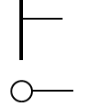
Fig. 9
{Points de mesure}D’autres appareils intervenants dans les boucles de régulation comme des automates programmables ou des calculateurs sont représentés par d’autres symboles.
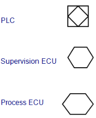
Fig. 10
On utilise les liaisons entre les différents instruments de régulation pour symboliser la nature des signaux de communication. Les signaux les plus utilisés sont les signaux électriques et pneumatiques.
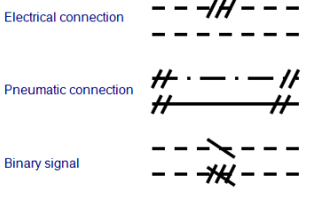
Fig. 11
L’alimentation des appareils peut être représentée par un trait continu fin, éventuellement complété par les abréviations suivantes :
Remarque : Le S signifie supply (alimentation, en anglais). La valeur de l’alimentation peut également être précisée.
Il est possible de préciser la nature des capteurs. Il suffit pour cela de se reporter aux tableaux ci-dessous. Il est toutefois bon de préciser qu’on utilise qu’assez rarement ces symboles afin de ne pas alourdir les schémas.
Les capteurs de température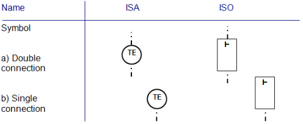
Fig. 12
Les capteurs de pression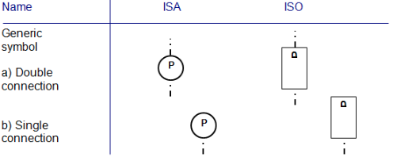
Fig. 13
Les capteurs de niveau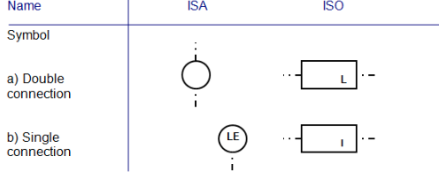
Fig. 14
Les capteurs de débit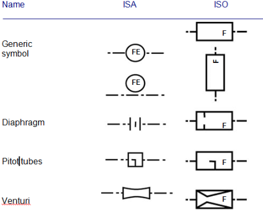
Fig. 15
La symbolisation des actionneurs se décompose en un symbole de l’organe de réglage complété par l’actionneur lui-même. C’est-à-dire que, pour les vannes, on représentera le corps de vanne complété par son servomoteur.
Les organes de réglage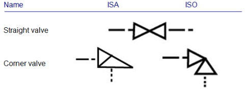
Fig. 16
Vannes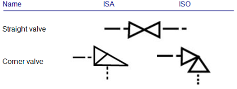
Fig. 17
Actionneurs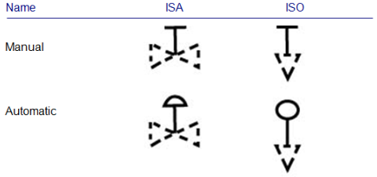
Fig. 18
Tous les appareils sont identifiés par des lettres suivies de chiffres. L'objectif principal de la norme des symboles est la lisibilité. Dans ces conditions, il est indispensable que les identifiants (codes alphanumériques) accompagnant les symboles graphiques soient aisément compréhensibles : un même symbole est utilisé pour les régulateurs d'une chaîne de régulation de débit et d'une chaîne de régulation de température (les lettres F [débit] et T [température ] différencier les deux contrôleurs).
S'il est nécessaire d'identifier la fonction de chaque élément graphique, il est indispensable de codifier cette identification. Le guide de codification de l'instrument Afnor donne les principes suivants :
La première valeur de code (ou lettre d'identification) de l'identifiant représente la variable mesurée, contrôlée, indiquée, etc. Cette lettre d'identification est dans tous les identifiants de la chaîne de mesure traitant cette variable (du capteur à l'organe de commande, en passant par l'actionneur) ; cette valeur de code est appelée un « signifiant » de la variable (ce signifiant a parfois un complément).
La valeur de code suivante concerne l'appareil à identifier (capteur, indicateur, transmetteur, enregistreur), la fonction réalisée (commande, commutation/contact, relais, calcul), l'appareil de commande (appareil de commande, actionneur, contrôleur autonome), et la signalisation (lumière, alarme).
Par exemple, l'identifiant LIT désigne un émetteur T, indicateur (I) de niveau (L). De même, TSL désigne un contact S (interrupteur) pour les basses (L) températures (T).
Les critères de sélection de la lettre d'identification ne sont pas toujours évidents. A noter qu'il faut choisir la variable à obtenir et non la variable mesurée par le capteur. Ainsi, par exemple, une mesure de niveau effectuée par un capteur de pression est identifiée par la lettre L (niveau), et non par P (pression). De même, une détection de niveau par un capteur de rayonnement est identifiée par la lettre L, et non par R (rayonnement). De plus, n'oubliez pas que tous les instruments d'une même chaîne de mesure doivent avoir la même lettre d'identification. Une fonction de contrôle de niveau, identifiée par la lettre L par exemple, peut être assurée par une mesure de pression (P) et un contrôle de débit (F) ; la fonction fournie est un contrôle de niveau.
Les valeurs de code sont généralement placées à l'intérieur de la bulle (au-dessus de la ligne horizontale pour les instruments du panneau de commande). Ces valeurs de code peuvent être complétées par un numéro d'identification qui est placé à l'intérieur (sous les valeurs de code d'identification) ou à l'extérieur (près) de la bulle. Les valeurs de code de qualification (voir ci-dessous) peuvent être placées à l'intérieur ou à l'extérieur de la bulle.
Nous n'allons pas passer ici en revue l'alphabet (voir tableau), mais notons néanmoins que la norme n'affecte pas les variables avec les lettres G, O et X, et que l'utilisation des lettres C, D, M et N sont "au choix de l'utilisateur" si la variable listée par la norme (respectivement : conductivité, densité, humidité, viscosité) n'est pas utilisée dans le schéma. De plus, s'agissant de l'action manuelle d'un opérateur sur un composant (lettre H), elle peut dépendre d'une ou plusieurs variables.
Notons enfin que, dans le cas d'entrées multiples où les variables (introduites dans un même composant) sont de natures différentes, la lettre U peut être utilisée comme première valeur de code pour chaque identifiant de variables mesurées.
Complément (ou modificateur) de l’initialePour certaines variables, une autre lettre doit être ajoutée pour spécifier sa signification (par exemple, la température différentielle est TD). La majuscule est recommandée (par la norme) pour ce supplément. Cependant, des lettres minuscules peuvent être utilisées si cela aide à la compréhension.
Sept lettres complètent la lettre d'identification :
Une ou plusieurs lettres succèdent à la ou aux lettres représentant la variable mesurée, et désignent soit l'élément primaire (capteur, etc.) soit la fonction de la variable. La norme définit ces lettres comme les valeurs de code suivantes. Parfois, les valeurs de code suivantes doivent être enchaînées pour compléter l'identification. Dans ce cas, l'ordre suivant doit être utilisé :
Comme pour la première lettre, certaines de ces lettres sont "au choix de l'utilisateur": N et X (ou B), pour l'affichage, B, N et X représentent une action.
La sécuritéNotons qu’il y a deux niveaux pour représenter un dispositif de sécurité. Le niveau de sécurité qui ne s’applique qu’à un instrument autonome (destiné à assurer la sécurité des personnes et la protection des équipements) est identifié par la lettre S en complément de l’initiale : PSV pour une soupape de sûreté, PSE pour un disque de rupture, TSE pour un dispositif de sécurité thermique, etc. La sécurité au niveau de l’installation complète (arrêt d’urgence…) est quant à elle identifiée par le double codet qualificatif/S (qui prend place en fin de l’identificateur).
Vous trouverez en annexe un tableau regroupant les codifications les plus couramment utilisées.
Comme nous l’avons vu dans le module 25, une régulation complète de niveau comporte au minimum un capteur, un transmetteur, un régulateur, un convertisseur et une vanne :
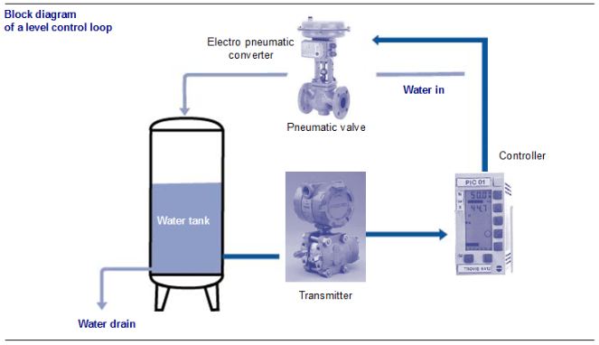
Fig. 19
Cette régulation se représentera de la façon suivante :
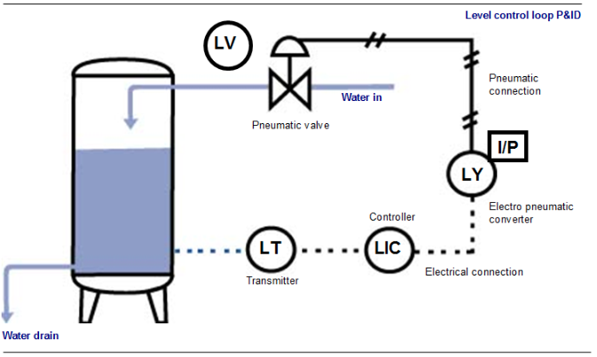
Fig. 20
On peut rencontrer les exemples suivants :
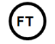
Fig. 21
F pour Flux T pour transmetteur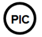
Fig. 22
C pour le régulateur P pour la pression I pour l'indicateur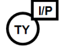
Fig. 23
I/P pour électropneumatique T pour température Y pour convertisseur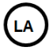
Fig. 24
H pour haut L pour niveau A pour alarmeCe sont des P\&ID (schémas TI) où la tuyauterie a été supprimée et ne montrent donc que l'instrumentation. Les boucles de contrôle sont regroupées par thème. Ces diagrammes se lisent de haut en bas. Ils commencent par les émetteurs (fonction de mesure) et sont suivis des fonctions de contrôle, des fonctions de conduite, des fonctions d'indication et des actionneurs
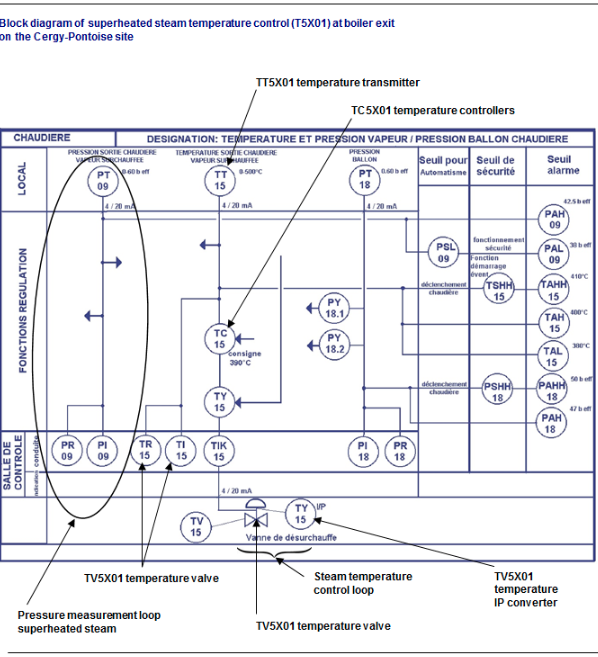
Fig. 25
Généralement, les périphériques des boucles adjacentes ayant les mêmes fonctions sont regroupés par zone.
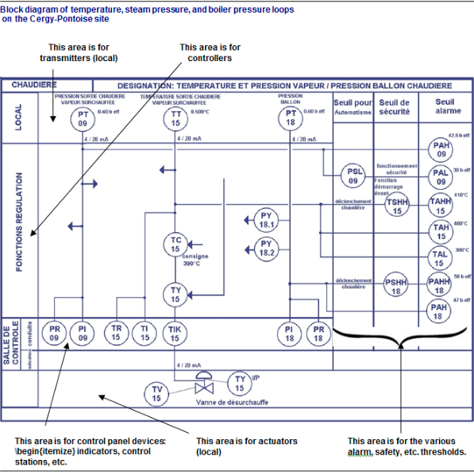
Fig. 26
Les instrumentistes ou les techniciens de maintenance ont aussi à leur disposition des schémas de câblage. Ces schémas, plus détaillés que les schémas TI, permettent de visualiser dans le détail le câblage des boucles de régulation. On retrouve dans ces schémas, non seulement les instruments, mais aussi et surtout les numéros de câbles reliant ces instruments, et même les numéros de bornes sur lesquelles ces câbles sont reliés.
Les bornes de chaque appareil électronique sont symbolisées par des cercles identifiés par un numéro correspondant au numéro de bornes attribué par le constructeur. Toutes les bornes câblées sont rassemblées dans un rectangle symbolisant le bornier.
Représentation des bornes de câblage d’un régulateur indicateur de débit n° 301 :
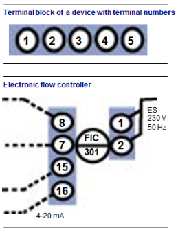
Fig. 27
On retrouve souvent dans ces schémas des boîtes de jonction dont le symbole ressemble à celui d’un bornier mais qui comporte en plus un numéro de boîte.
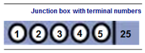
Fig. 28
Les schémas de câblage complets contiennent les différents instruments de contrôle, leurs borniers, les boîtes de jonction, et les connexions (fils) reliant ces appareils. Les valeurs de puissance et de signal utilisées peuvent être spécifiées dans le schéma de câblage.
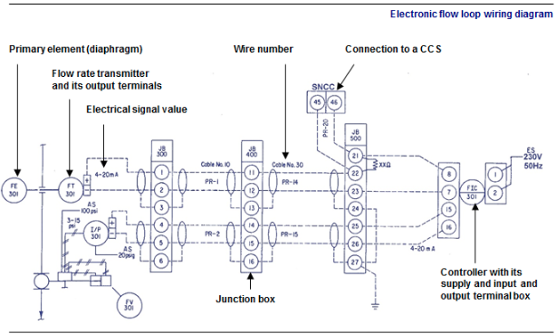
Fig. 29
Pour les appareils pneumatiques, les orifices de câblage pneumatiques sont symbolisés par des petits carrés juxtaposés identifiés par un numéro ou par une ou plusieurs lettres. Généralement, la lettre I correspond à l’entrée (pour input), la lettre O correspond la sortie (pour output), la lettre S correspond à l’alimentation (pour supply). Les valeurs d’alimentation et de signal utilisées peuvent être précisées sur le schéma de câblage.
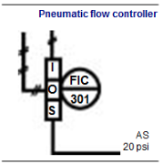
Fig. 30
Les schémas de câblage complets contiennent donc les différents instruments de régulation, leurs orifices, les boîtes de jonction ainsi que les liaisons (tubes pneumatiques) reliant ces appareils.
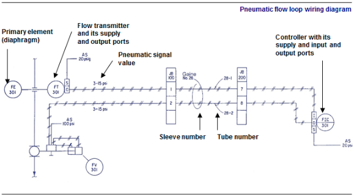
Fig. 31
1. Capteurs de température
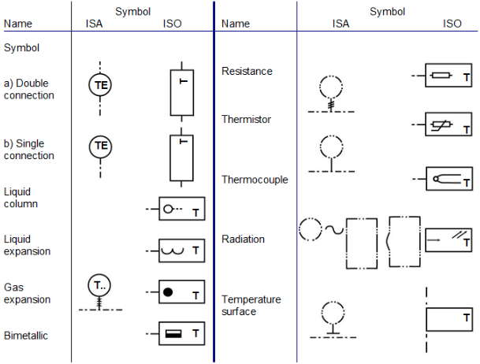
Fig. 32
2. Capteurs de pression
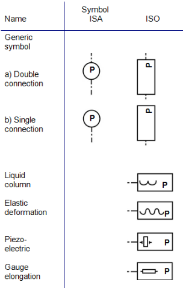
Fig. 33
3. Capteurs de niveau
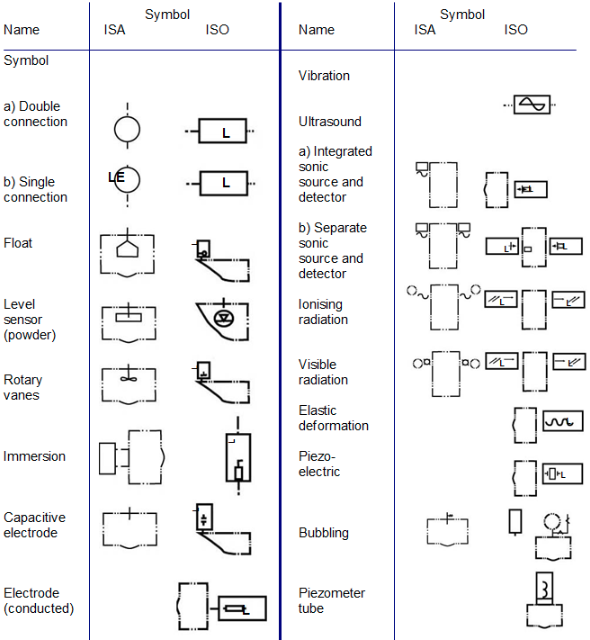
Fig. 34
4. Capteurs de débit
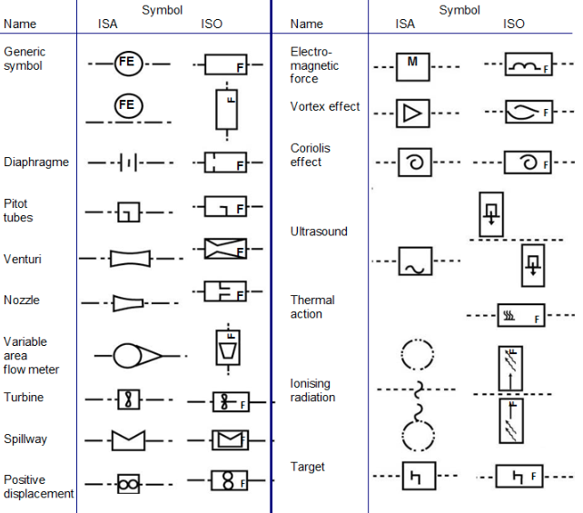
Fig. 35
5. Contrôle des composants
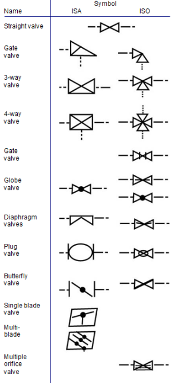
Fig. 36
6. Actionneurs
[width=]{Images/M26/M26_37.png}
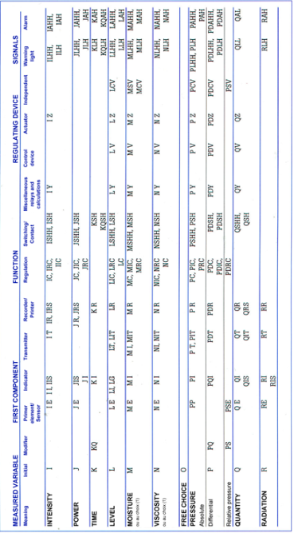
Fig. 37
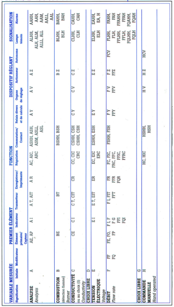
Fig. 38
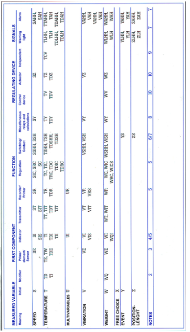
Fig. 39
NOTES